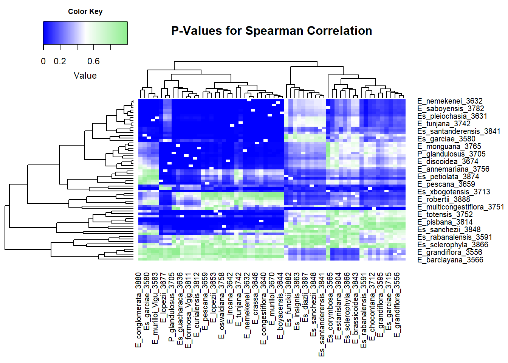

This code is designed to generate two correlograms with dendrograms, using evolutionary distances and least-cost distances between individuals of the Espeletiinae genus. The goal is to visualize the relationships between individuals based on their evolutionary divergence and cost-distance metrics, and to explore the statistical correlations between these two types of distances. The code produces two distinct plots:
A correlogram that shows Spearman correlation coefficients between the pairwise distances.
A correlogram representing the p-values for the significance of those correlations.
Below, I explain each step in the code and how it contributes to generating these two visualizations.
First, we load two distance matrices:
Evolutionary Distance Matrix
(evol_dist): This matrix represents the
evolutionary distance between individuals, derived from phylogenetic
data.
Least-Cost Distance Matrix (DistM):
This matrix contains the least-cost path distances between individuals,
calculated using geographic and environmental variables.
Both matrices are read into R using read.csv() and
converted into matrix format with as.matrix(). Each matrix
uses species names as row and column identifiers.
The next step involves computing pairwise Spearman
correlations between the evolutionary and least-cost distance
matrices. To achieve this, we define the correlation_test()
function, which:
Takes as input the distance values between two individuals from both matrices.
Filters out missing or infinite values.
Performs a Spearman correlation test (cor.test()) to
assess the relationship between the two distance types for each pair of
individuals.
Returns the correlation coefficient and the corresponding p-value.
The results are stored in two matrices: one for the
correlation coefficients (cor_matrix) and
another for the p-values (p_values).
# Read the distance matrices
evol_dist <- as.matrix(read.csv("C:/Users/Usuario/Desktop/Archivos_tesis/Distancias_evolutivas/Dis_evol_Clado_Colombiano/Dist_evol_Clado_Colombiano_ordenado_COriental.csv", header = TRUE, row.names = 1))
DistM <- as.matrix(read.csv("C:/Users/Usuario/Desktop/Archivos_tesis/Resultados_matrices_indices/Indices_matrices_Clado_Colombiano/DistM.csv", header = TRUE, row.names = 1))
# Number of individuals
n_individuals <- nrow(evol_dist)
# Create matrices to store results
cor_matrix <- matrix(NA, nrow = n_individuals, ncol = n_individuals)
p_values <- matrix(NA, nrow = n_individuals, ncol = n_individuals)
# Define the function to calculate pairwise correlation and perform hypothesis testing
correlation_test <- function(ind1, ind2, dist_matrix1, dist_matrix2) {
dist1 <- as.numeric(dist_matrix1[ind1, ])
dist2 <- as.numeric(dist_matrix2[ind2, ])
# Filter NA and Inf
valid_indices <- complete.cases(dist1, dist2)
dist1 <- dist1[valid_indices]
dist2 <- dist2[valid_indices]
# Use cor.test with exact = FALSE to get an approximate p-value in case of ties
result <- cor.test(dist1, dist2, method = "spearman", exact = FALSE)
return(list(correlation = result$estimate, p_value = result$p.value))
}
# Fill the correlation and p-value matrices
for (i in 1:n_individuals) {
for (j in 1:n_individuals) {
if (i != j) {
# Calculate correlation
result <- correlation_test(i, j, evol_dist, DistM)
cor_matrix[i, j] <- result$correlation
p_values[i, j] <- result$p_value
}
}
}
# Assign species names to rows and columns
species_names <- rownames(evol_dist)
rownames(cor_matrix) <- species_names
colnames(cor_matrix) <- species_names
species_names <- rownames(DistM)
rownames(p_values) <- species_names
colnames(p_values) <- species_namesTo visualize the relationships, we generate a heatmap with
dendrograms using the heatmap.2() function. The heatmap
displays the pairwise Spearman correlations between
individuals, with rows and columns representing species names. The
dendrograms help cluster individuals based on similarity in their
correlation profiles.
The following adjustments are made to the plot:
A color gradient from blue to red to represent correlation strength.
A dendrogram on both rows and columns to visualize clustering.
Proper margins to accommodate the species names.
par(cex.main = 0.8) # Adjust title size
# Create the heatmap with dendrogram using correlations
heatmap.2(as.matrix(cor_matrix), # Use correlation values as data
trace = "none", # No additional color lines
dendrogram = "both", # Show dendrogram on both rows and columns
col = colorRampPalette(c("blue", "white", "red"))(100), # Change colors if desired
main = "Spearman Correlation Between Pairs", # Main title
key = TRUE, # Show color key
density.info = "none", # No density information
symkey = TRUE, # Symmetric key in the legend
labRow = species_names, # Row labels
labCol = species_names, # Column labels
margins = c(8.5, 8.5)) # Adjust margins to include labelsA second heatmap is generated to represent the statistical significance of the correlations, using p-values. This helps assess the reliability of the observed correlations. In this plot, the color gradient moves from blue to green, representing varying levels of p-values, with clustering also visualized through the dendrograms.
par(cex.main = 0.8) # Adjust title size
# Create the heatmap with dendrogram using p-values
heatmap.2(as.matrix(p_values), # Use p-values as data
trace = "none", # No additional color lines
dendrogram = "both", # Show dendrogram on both rows and columns
col = colorRampPalette(c("blue", "white", "lightgreen"))(100),
main = "P-Values for Spearman Correlation", # Main title
key = TRUE, # Show color key
density.info = "none", # No density information
symkey = FALSE, # No symmetry in the legend
labRow = species_names, # Row labels
labCol = species_names, # Column labels
margins = c(8.5, 8.5)) # Adjust margins to include labels